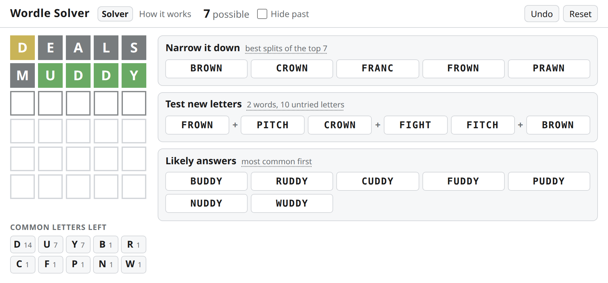
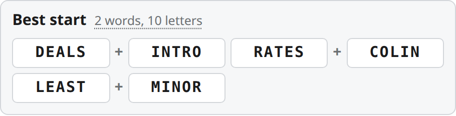
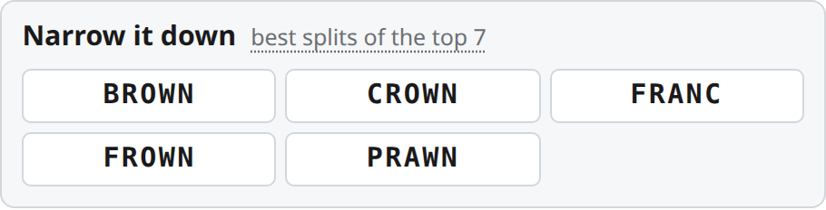

How it works
Three simple ideas, one example
You tell the solver what Wordle showed you. It keeps only the words that still fit, puts the common ones first, and suggests the guess that teaches you the most. Let's follow one game where the answer is BUDDY.

1 Keep only the words that fit
Our first guess is DEALS and Wordle shows:
DEALS
The solver then asks every one of the 14,854 allowed words: "if you were the answer, would DEALS have shown exactly these colours?"
Only words that answer yes are kept. Here that leaves 186 words.
DEALS would show…
- BUDDYDEALS✓ keep
- ROUNDDEALS✓ keep
- MOODYDEALS✓ keep
- DOINGDEALS✗ D would be green
- SOLIDDEALS✗ S and L would light up
- DEALTDEALS✗ four greens
2 Put the common words first
Next we guess MUDDY: MUDDY. Now only 7 words fit.
Wordle answers are everyday words, but most allowed words are obscure. So Likely answers sorts them by how often each word appears in English text on the web.
BUDDY is about 61× more common than the next one, so it goes to the top.
Tick Hide past to also drop words that have already been a Wordle answer.
How often each word is used
3 Best start: two words, ten letters
Before you have any clues, the best move is to test the most common letters.
The solver counts how many of the most common words (minus past answers) contain each letter. The top ten are S E A R I O L T N D.
Then it looks for two real words with no letter in common that cover as many of them as possible:
DEALS+INTRO
After your first guess it does the same with the letters you haven't tried yet (shown as Test new letters).
Words containing each letter

4 Narrow it down: escape the lookalike trap
We know _UDDY, but 7 words still fit: BUDDY, RUDDY, CUDDY, FUDDY, PUDDY, NUDDY, WUDDY. Guessing them one by one could take 7 more tries, and we only have 4 left.
Instead the solver takes the 20 most likely answers (here all 7) and tries every allowed word as a guess, even ones that can't be the answer. It picks the guess that splits them into the most, smallest groups.
BROWN tests B, R, N and W at once. Whatever colours it shows, at most 3 words are left, so we're sure to finish within six guesses.
A ★ marks a suggestion that could also be the answer. "solves it" means every possible answer would show different colours.
If you guess BROWN…
- BROWN→BUDDYsolved
- BROWN→RUDDYsolved
- BROWN→NUDDYsolved
- BROWN→WUDDYsolved
- BROWN→CUDDY FUDDY PUDDY3 left

Replaces your current game. Undo and Reset still work.
Credits
- Allowed words Wordle's valid word list 14,854 words, collected by dracos
- Word frequencies Peter Norvig's word counts From the Google Web Trillion Word Corpus
- Past answers Rock Paper Shotgun Every Wordle answer so far
Wordle is made by Josh Wardle and owned by The New York Times. This is an unofficial fan project. Everything runs in your browser. Source on GitHub.